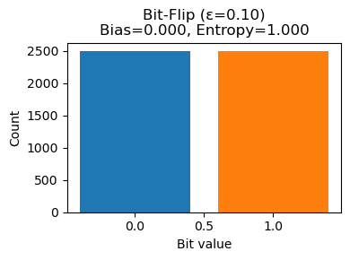
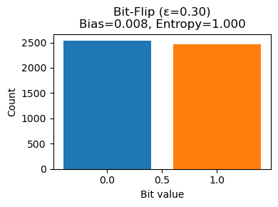
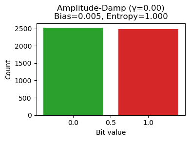
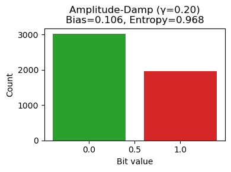
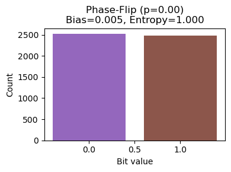
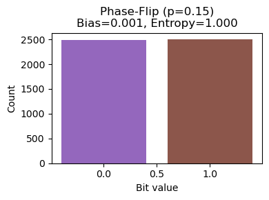
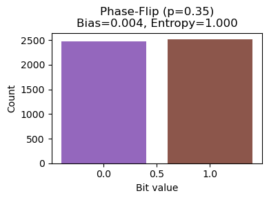
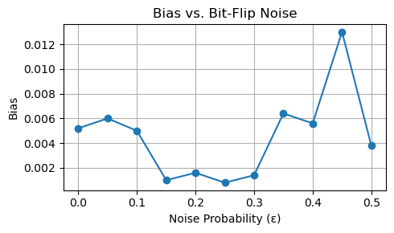
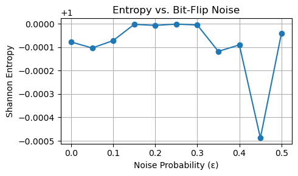

Chapter 3: Noise in QRANDOPT#
In this expanded chapter, we dive deep into how different noise channels affect a random bitstream, with rich explanations and static matplotlib plots. We cover:
Bit-Flip Channel
Amplitude-Damping Channel
Phase-Flip Channel
All plots are generated with matplotlib to ensure proper rendering in Jupyter Book.
1. Bit-Flip Channel#
Each bit is flipped (0→1 or 1→0) with probability \(\epsilon\). Mathematically:
Let’s simulate and visualize for three values of \(\epsilon\): 0.0, 0.1, and 0.3.
import numpy as np
import matplotlib.pyplot as plt
# Prepare a fixed raw bitstream
np.random.seed(1)
raw = np.random.choice([0,1], size=5000)
def plot_bitflip(epsilon):
flips = np.random.rand(len(raw)) < epsilon
noisy = raw.copy()
noisy[flips] = 1 - noisy[flips]
p1 = noisy.mean()
bias = abs(p1 - 0.5)
entropy = -(p1*np.log2(p1+1e-9) + (1-p1)*np.log2(1-p1+1e-9))
plt.figure(figsize=(4,3))
plt.bar([0,1], [(noisy==0).sum(), (noisy==1).sum()], color=['#1f77b4','#ff7f0e'])
plt.title(f'Bit-Flip (ε={epsilon:.2f})\nBias={bias:.3f}, Entropy={entropy:.3f}')
plt.xlabel('Bit value')
plt.ylabel('Count')
plt.tight_layout()
plt.show()
for eps in [0.0, 0.1, 0.3]:
plot_bitflip(eps)


2. Amplitude-Damping Channel#
This channel models asymmetric noise: 1 decays to 0 with probability \(\gamma\), but 0 stays 0:
Simulate for \(\gamma = 0.0\) and \(0.2\):
def plot_damping(gamma):
noisy = raw.copy()
mask = (raw == 1) & (np.random.rand(len(raw)) < gamma)
noisy[mask] = 0
p1 = noisy.mean()
bias = abs(p1 - 0.5)
entropy = -(p1*np.log2(p1+1e-9) + (1-p1)*np.log2(1-p1+1e-9))
plt.figure(figsize=(4,3))
plt.bar([0,1], [(noisy==0).sum(), (noisy==1).sum()], color=['#2ca02c','#d62728'])
plt.title(f'Amplitude-Damp (γ={gamma:.2f})\nBias={bias:.3f}, Entropy={entropy:.3f}')
plt.xlabel('Bit value')
plt.ylabel('Count')
plt.tight_layout()
plt.show()
for gamma in [0.0, 0.2]:
plot_damping(gamma)


3. Phase-Flip Channel#
A phase-flip in quantum bits flips the phase but not the bit value. Classically, we mimic it as a bit-flip to illustrate similar statistical effects:
Simulate for \(p = 0.0,\,0.15,\,0.35\):
def plot_phaseflip(p):
flips = np.random.rand(len(raw)) < p
noisy = raw.copy()
noisy[flips] = 1 - noisy[flips]
p1 = noisy.mean()
bias = abs(p1 - 0.5)
entropy = -(p1*np.log2(p1+1e-9) + (1-p1)*np.log2(1-p1+1e-9))
plt.figure(figsize=(4,3))
plt.bar([0,1], [(noisy==0).sum(), (noisy==1).sum()], color=['#9467bd','#8c564b'])
plt.title(f'Phase-Flip (p={p:.2f})\nBias={bias:.3f}, Entropy={entropy:.3f}')
plt.xlabel('Bit value')
plt.ylabel('Count')
plt.tight_layout()
plt.show()
for p in [0.0, 0.15, 0.35]:
plot_phaseflip(p)



4. Bias and Entropy vs Noise Level#
Let’s examine how bias and entropy evolve continuously as we vary \(\epsilon\) in the bit-flip channel from 0 to 0.5.
# Compute bias and entropy over a range of noise levels
epsilons = np.linspace(0, 0.5, 11)
biases = []
entropies = []
for eps in epsilons:
flips = np.random.rand(len(raw)) < eps
noisy = raw.copy()
noisy[flips] = 1 - noisy[flips]
p1 = noisy.mean()
biases.append(abs(p1 - 0.5))
entropies.append(-(p1*np.log2(p1+1e-9) + (1-p1)*np.log2(1-p1+1e-9)))
plt.figure(figsize=(5,3))
plt.plot(epsilons, biases, marker='o')
plt.title('Bias vs. Bit-Flip Noise')
plt.xlabel('Noise Probability (ε)')
plt.ylabel('Bias')
plt.grid(True)
plt.tight_layout()
plt.show()
plt.figure(figsize=(5,3))
plt.plot(epsilons, entropies, marker='o')
plt.title('Entropy vs. Bit-Flip Noise')
plt.xlabel('Noise Probability (ε)')
plt.ylabel('Shannon Entropy')
plt.grid(True)
plt.tight_layout()
plt.show()


Key Takeaways#
Noise channels introduce randomness, raising entropy and affecting bias.
The bit-flip and phase-flip channels are statistically identical but represent different quantum error types.
The amplitude-damping channel models irreversible energy loss (1→0 decay).
Plotting bias and entropy vs. noise probability illustrates how randomness peaks around \(\epsilon = 0.5\).